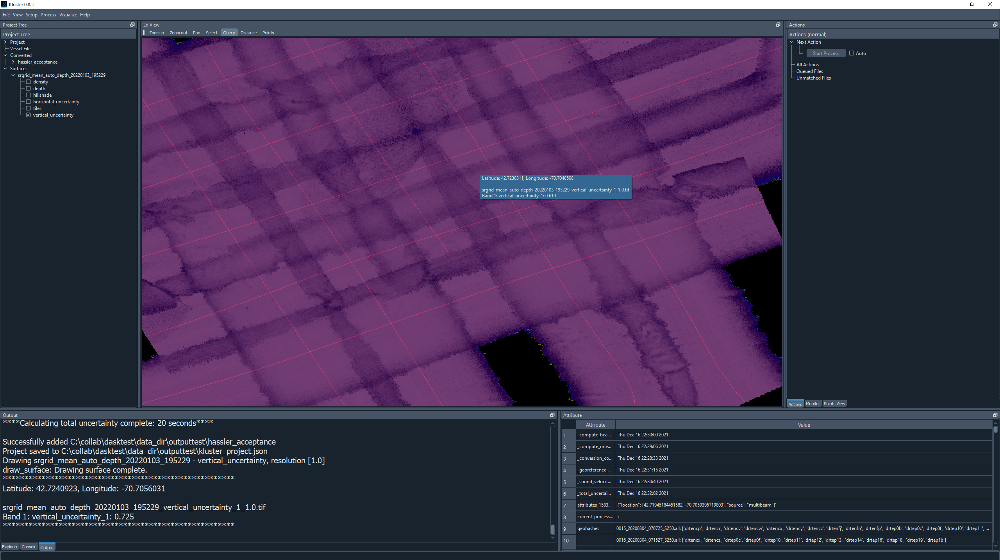

Reference Test¶
This section will occasionally refer to the following documents:
NOAA Field Procedures Manual (FPM) - See “Field Procedures Manual” section
From the FPM Section 1.5.6.3:
A reference surface is critical to find errors from hydrographic platform to hydrographic platform. Additionally, data may be compared to historical survey data. The reference surface is completed after all sonar and ancillary instrument calibrations are completed. Field units can assess the combined effects of vessel offsets, patch test biases, and sonar bottom detection for each platform and system setup. Data and grids are collected and compared against each other for agreement. This is a capstone of the system preparation process as it combines the data from all constituent systems for an assessment of the final result.
Section 1.5.6.3.1 describes the steps taken to acquire and analyze the data. To summarize, we acquire data in a grid, running the lines in both directions and add all ancillary data (i.e. SBETs) to achieve a final processed state. We then check for artifacts or processing issues, analyze the TPU of the surface and compare the surface to previous reference surfaces and/or other vessels.
See the line plan below as an example.

Within Kluster we have the ability to process data, generate a surface and analyze that surface for depth and uncertainty (2dView - Query).
{kind=link}
In addition, we can also generate histograms of uncertainty for soundings (Visualize - Basic Plots).

What we can’t currently do is generate a difference between two surfaces, or generate statistics on a surface in Kluster. You will be able to use QC Tools with Kluster surfaces, and you can export Kluster grids to geotiff to work with them in QGIS or some other software that can handle that data.